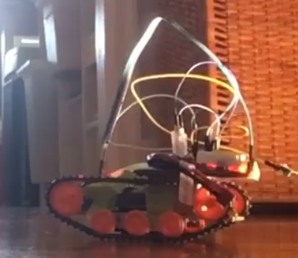
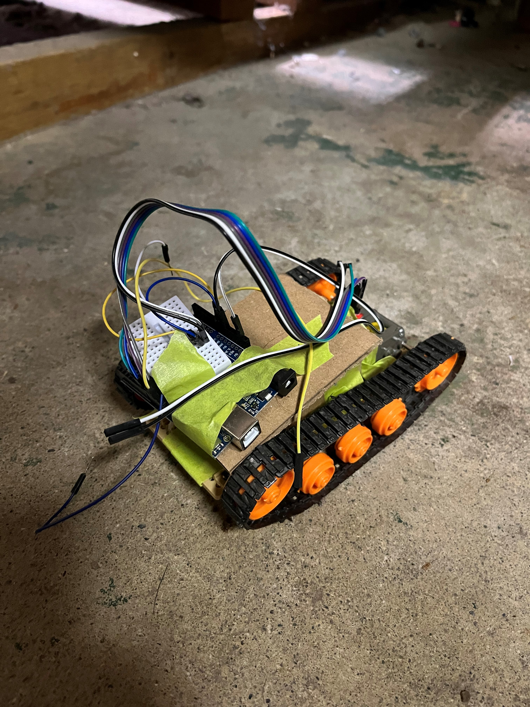

Remote Controlled Tamiya Tracked Vehicle
I worked on this project last summer, in parallel with the spherical remote-controlled robot. I ended up reusing a lot of the code and even used the same remote controller for both projects.
I thought of this project when I saw the Tamiya track base kit available at my local electronics shop. Tamiya is a Japanese model kit company that mainly creates kits for full-size RC cars. They also make little mechanical robot kits/toys for kids to put together. Building one of these kits at a summer camp was actually my first interaction with the company and one of my first interactions with electronics.

The track base kit is really 3 individual kits that when individually assembled and combined, give you a little tracked vehicle platform, upon which you can build some kind of robot. I am definitely more electrically-inclined than mechanically-inclined (I did choose electrical engineering as my degree), so the thought of having a pre-designed mechanical base that I could put together and then put some electronics on top of was very appealing to me.

The electronics are pretty simple, just an Arduino Uno, an L9110s dual H-bridge switched with PWM to drive the motors, the two DC motors from the gearbox kit, a 433 MHz RF link receiver, and a 2S 1300 mAh LiPo to power everything.
There is a surprising amount of code for what should have been a simple program to receive the data from the receiver and generate PWM signals to drive the two motors. Most of this stems from the fact that I had to write code to generate the PWM signals in firmware, due to the fact that the hardware timers that the Arduino uses to generate PWM on its own are used by the RadioHead library that I used for radio communication, and that I could never get any official software PWM library to work properly. If you want to take a look at the code, it is available here.
There are a couple of things that I would change with this project if I were to do it again (which I definitely will, since I still have the track base). One of them is to allow the motors time to ramp up/down, because with my code, the motors were going from stopped to whatever speed I set on the remote pretty much instantly, which was pretty hard on the motors, which heated up quite a bit. Another thing I would do in the future is to add some autonomous functionality to it. I have some GPS and compass modules lying around, and I've had an idea for an autonomous robot that could do a waypoint mission for a while, and this tracked base is a perfect base for a project like that.

